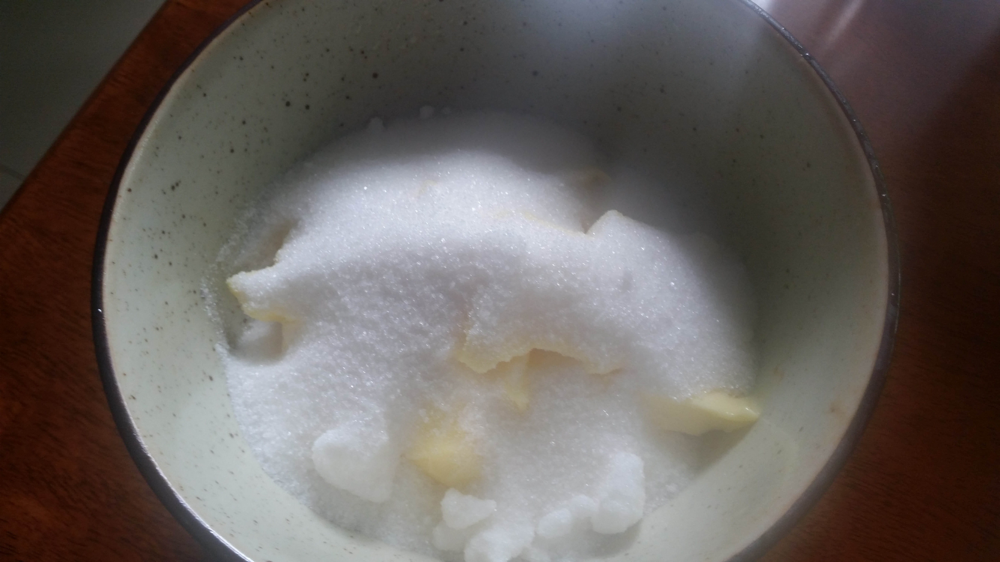
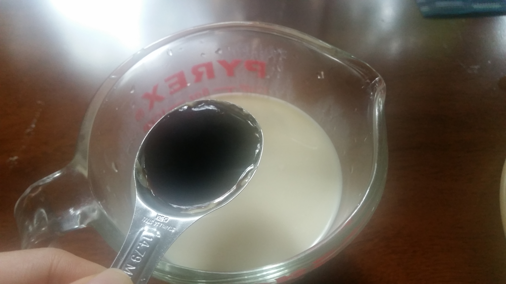
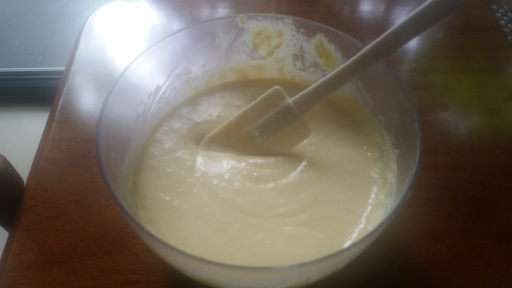
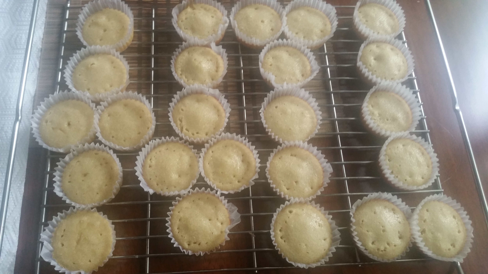
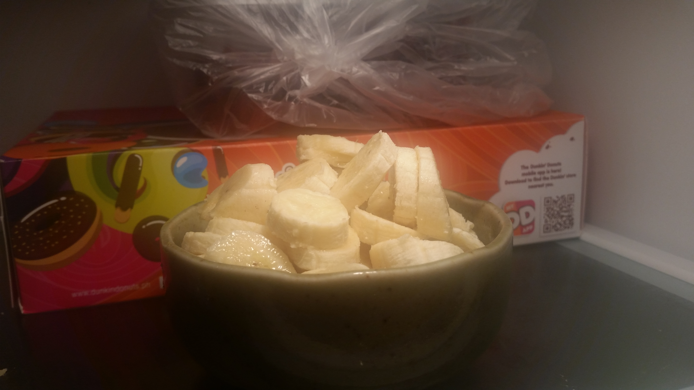
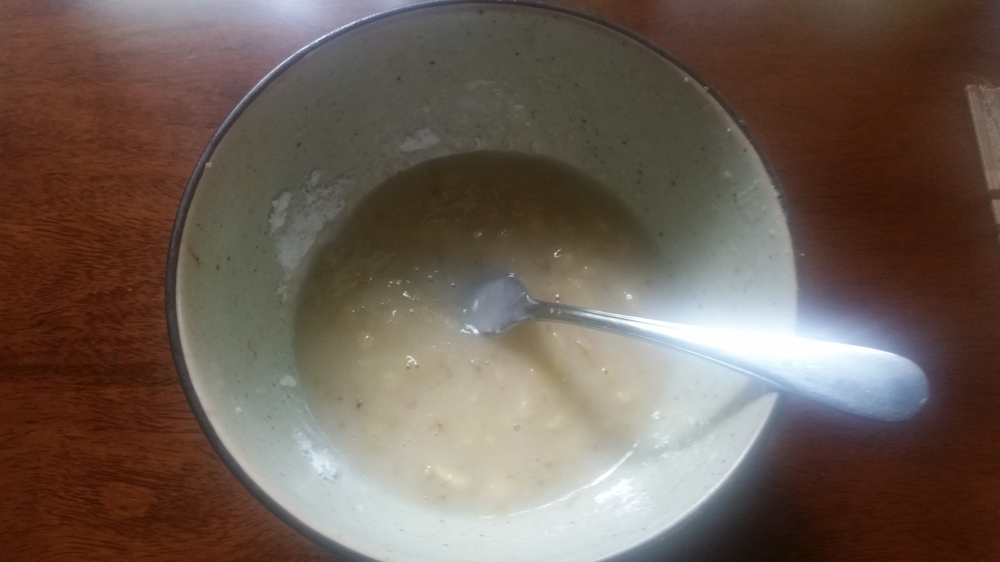

Ingredients
- ¾ cup / 151 g butter, unsalted (Magnolia Butter - for the batter dough)
- ¾ cup granulated sugar (for the batter dough)
- 2 cups confectioner powdered sugar (Peotraco Premium)
- 1 tablespoon vanilla extract (McCormick)
- 2 1/3 cups bread purpose flour
- 1 cup full cream milk, room temperature (Bear Brand – for the batter dough)
- 2 tablespoons full cream milk, room temperature (Bear Brand - for the frosting)
- 3 medium eggs at room temperature
- 2 teaspoon baking powder (Queen Double Acting Baking Powder)
- 1 teaspoon iodized fine salt (McCormick)
- 231 g Latundan banana
Procedure
- In a large mixing bowl, I used an egg whisk to manually cream the butter, sugar together until light and fluffy. 
- I measured one cup of milk on a glass beaker and put the vanilla extract. I cracked open three eggs and placed them on a glass bowl. 
- I poured the milk containing the vanilla extract on the mixing bowl containing the dry ingredients, butter & sugar, and then included the eggs. I mixed them together with a whisk until thoroughly combined.
- I added in the bread flour and baking powder after sifting with a sieve and then added the salt. I mixed all the ingredients until just combined. I also scraped the sides and the bottom of the bowl to make sure everything gets mixed in. 
- I put 1 scoopful of the batter on a cupcake sheet and baked by batches on my oven pre-heated to 175 degrees Celsius (six cupcakes per batch except batch 5 that had 4 large cupcakes – 2 scoopfuls per cupcake sheet):
- Batch# 1 – 14:30 minutes
- Batch# 2 – 15:30 minutes
- Batch# 3 – 16:30 minutes
- Batch# 4 – 17:30 minutes
- I removed every batch of cupcakes that were baked from the oven and transferred to a steel wire rack to cool completely. 
- I thinly sliced the Latundan bananas and then placed them on a bowl with plastic and stored in the refrigerator for 40 minutes. 
- For the frosting, I mixed together the confectioner sugar and milk until they became light and fluffy and refrigerated them from 1:43 PM to 3:16 PM. I then included the latundan bananas from the refrigerator. 
- I placed around one table spoon of the filling on top of each baked cupcake and cooled all the cupcakes from Friday 4:30 PM to Saturday 8:47 AM.


Feedback
- Batch# 1
- Texture: Icing is good because it is solid but sticky, Cupcake is soft and moist like pudding
- Taste/Flavor: Too much confectioner sugar so it has candy like flavor
- Appearance: Size is ok
- Batch# 2
- Texture: Chewy cookie consistent
- Taste: Most ideal but tray needs to be placed on top level in baking oven. Has candy like flavor due to excessive confectioner sugar and sticky icing
- Appearance: Toasted at the bottom, more moist at the bottom
- Batch# 3
- Texture: Same with previous batches in regards to icing/frosting
- Taste: Like a cake already but an undercooked one
- Appearance: More grainy than previous batches
- Batch# 4
- Texture: Same with previous batches in regards to icing/frosting
- Taste: Tastes like muffin
- Appearance: Looked really toasty
Recommendations
- Cavendish bananas can be used. They need to be refrigerated to become sweeter. It has the lightest flavor among the bananas.
- Fluffy texture depends on my oven’s top and bottom so I need to put my tray more on top.
- The ideal icing requires less chunks so better use a potato masher for crushing bananas next time.
- To offset the sugar probably add more black or espresso coffee to the icing.
- Get the hardcore pure coffee not 3-in-1. Or get the dark chocolate and melt with the bananas. Taste will be more balanced if I can cut confectioner sugar and replace with coffee.
- Sift the confectioner sugar first and use less or use honey. If you opt to use commercial honey then use less of it as wild honey is more natural and distinguished by its light yellow color.
- I can get ‘blend 45’ for testing—tastes good as espresso or coffee granules from UCC Vienna Cafe
References
- Olson, A. (2018). Bake with Anna Olson. Fluffy Vanilla Cupcakes. Retrieved from https://www.bakewithannaolson.com/fluffy-vanilla-cupcakes.html
- Stewart, M. (2018). martha stewart. Vanilla Frosting. Retrieved from https://www.marthastewart.com/341302/vanilla-frosting
- Farnsworth, R. (2018). The Stay at Home Chef. THE MOST AMAZING VANILLA CUPCAKE RECIPE. Retrieved from https://thestayathomechef.com/vanilla-cupcake-recipe/
COPYRIGHT 2018 ALL RIGHTS RESERVED. THE FOODIE CRAFTSMAN. This website is for educational purposes only. CONTACT US Email: thefoodiecraftsman@gmail.com | Tel: +639178151032